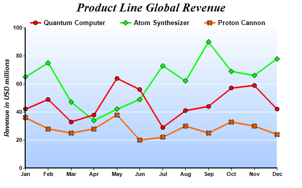

This example demonstrates using symbols to represent data points and using gradient color for plot area background.
The following is the command line version of the code in "cppdemo/symbolline2". The MFC version of the code is in "mfcdemo/mfcdemo". The Qt Widgets version of the code is in "qtdemo/qtdemo". The QML/Qt Quick version of the code is in "qmldemo/qmldemo".
#include "chartdir.h"
int main(int argc, char *argv[])
{
// The data for the line chart
double data0[] = {42, 49, 33, 38, 64, 56, 29, 41, 44, 57, 59, 42};
const int data0_size = (int)(sizeof(data0)/sizeof(*data0));
double data1[] = {65, 75, 47, 34, 42, 49, 73, 62, 90, 69, 66, 78};
const int data1_size = (int)(sizeof(data1)/sizeof(*data1));
double data2[] = {36, 28, 25, 28, 38, 20, 22, 30, 25, 33, 30, 24};
const int data2_size = (int)(sizeof(data2)/sizeof(*data2));
const char* labels[] = {"Jan", "Feb", "Mar", "Apr", "May", "Jun", "Jul", "Aug", "Sep", "Oct",
"Nov", "Dec"};
const int labels_size = (int)(sizeof(labels)/sizeof(*labels));
// Create a XYChart object of size 600 x 375 pixels
XYChart* c = new XYChart(600, 375);
// Add a title to the chart using 18pt Times Bold Italic font
c->addTitle("Product Line Global Revenue", "Times New Roman Bold Italic", 18);
// Set the plotarea at (50, 55) and of 500 x 280 pixels in size. Use a vertical gradient color
// from light blue (f9f9ff) to sky blue (aaccff) as background. Set border to transparent and
// grid lines to white (ffffff).
c->setPlotArea(50, 55, 500, 280, c->linearGradientColor(0, 55, 0, 335, 0xf9fcff, 0xaaccff), -1,
Chart::Transparent, 0xffffff);
// Add a legend box at (50, 28) using horizontal layout. Use 10pt Arial Bold as font, with
// transparent background.
c->addLegend(50, 28, false, "Arial Bold", 10)->setBackground(Chart::Transparent);
// Set the x axis labels
c->xAxis()->setLabels(StringArray(labels, labels_size));
// Set y-axis tick density to 30 pixels. ChartDirector auto-scaling will use this as the
// guideline when putting ticks on the y-axis.
c->yAxis()->setTickDensity(30);
// Set axis label style to 8pt Arial Bold
c->xAxis()->setLabelStyle("Arial Bold", 8);
c->yAxis()->setLabelStyle("Arial Bold", 8);
// Set axis line width to 2 pixels
c->xAxis()->setWidth(2);
c->yAxis()->setWidth(2);
// Add axis title using 10pt Arial Bold Italic font
c->yAxis()->setTitle("Revenue in USD millions", "Arial Bold Italic", 10);
// Add a line layer to the chart
LineLayer* layer = c->addLineLayer();
// Set the line width to 3 pixels
layer->setLineWidth(3);
// Add the three data sets to the line layer, using circles, diamands and X shapes as symbols
layer->addDataSet(DoubleArray(data0, data0_size), 0xff0000, "Quantum Computer")->setDataSymbol(
Chart::CircleSymbol, 9);
layer->addDataSet(DoubleArray(data1, data1_size), 0x00ff00, "Atom Synthesizer")->setDataSymbol(
Chart::DiamondSymbol, 11);
layer->addDataSet(DoubleArray(data2, data2_size), 0xff6600, "Proton Cannon")->setDataSymbol(
Chart::Cross2Shape(), 11);
// Output the chart
c->makeChart("symbolline2.png");
//free up resources
delete c;
return 0;
}
© 2023 Advanced Software Engineering Limited. All rights reserved.